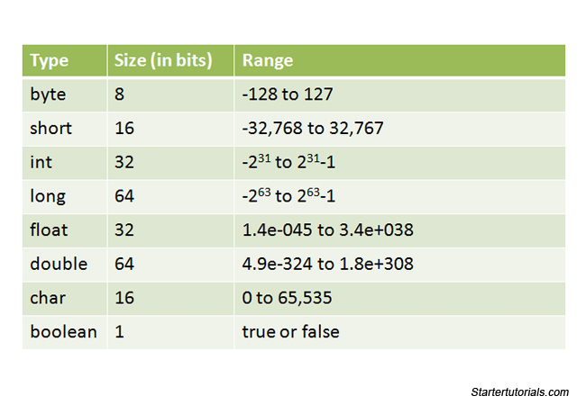

Java Data Types
February 28, 2022
Variables are nothing more than reserved memory locations for storing values. That is, when you create a variable, you reserve some space in memory.
Based on the data type of a variable, the operating system allocates memory and decides what can be stored in the reserved memory. Therefore, by assigning different data types to variables, you can store integers, decimals, or characters in these variables.
There are two data types available in Java:
- Primitive data types.
- Reference/object data types (non-primitive).
Primitive Data Types
A primitive data type specifies the size and type of variable values, and it has no additional methods. There are eight primitive data types in Java:
